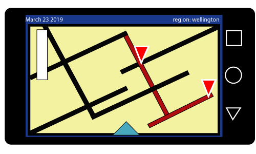
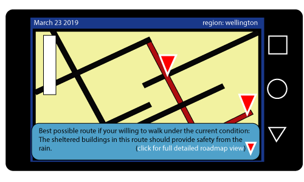

The main idea and goal of this app was looking into the elements of a simple and straightforward weather application. Approaching with a feature that introduces suggestions to the user as subtle tips. Looking at how this app can go beyond its concept into development. Is this human element that it provides, giving this app an interesting feature that i really want to develop. Since not many modern weather applications today, have this element. Thou mostly the app is still reliant with personalized weather information, it also relies with what information is given, in order to come up with suggestions based on the weather information.
Maybe as an add on, the suggestion feature can also be further enchanced to be more than just a simple tips and tricks informant everytime the weather changes. As such maybe elements such as adding a built in roadmap guide log. Which shows the user possible sheltered routes with buildings they can walk underneath. Provided of course they want to walk and not take a bus or ride to their destination. Thou an obvious suggestion, with further development adaptability with information is key to adding more detailed suggestions. Mainly targeting the aspect for users, who arent aware of the sudden weather chancge.
This element of suggestion in a weather app, is the main goal i wanted to present into this app, stepping it away from normal everyday weather information, and turning it into a unique brand of personalize, interactivity through tips and suggestions.


research source references
https://www.xda-developers.com/best-weather-apps-weather-widget-android/
https://www.canva.com/learn/website-color-schemes/
http://authenticweather.com/
https://www.encyclopedia.com/earth-and-environment/atmosphere-and-weather/weather-and-climate-terms-and-concepts/weather-forecasting